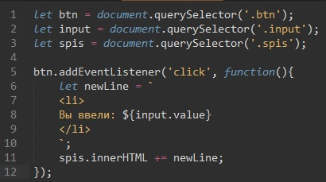

Пример
Шаблонные литералы заключены в обратные кавычки (` `) вместо двойных или одинарных. Они могут содержать подстановки, обозначаемые знаком доллара и фигурными скобк'ами (${выражение}).
Шаблонные строки теперь позволяют записывать значения переменных на нескольких строках! Раньше если необходимо было перенести текст на новую строку, нужно было использовать символ \n.
Листинг кода JS для примера:
В переменную newLine мы поместили строковая интерполяцию , которую поместили в обратные кавычки. внутри строки мы использовали выражение ${input.value} - которое содержит введенное значение объекта input